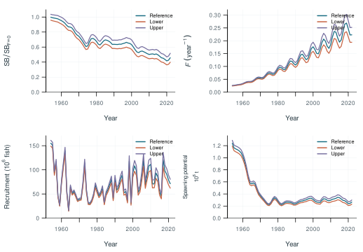
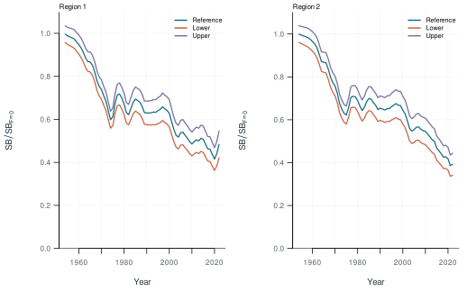
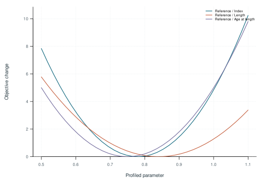
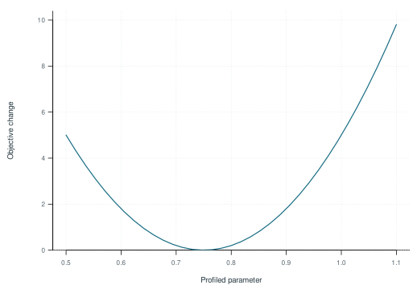
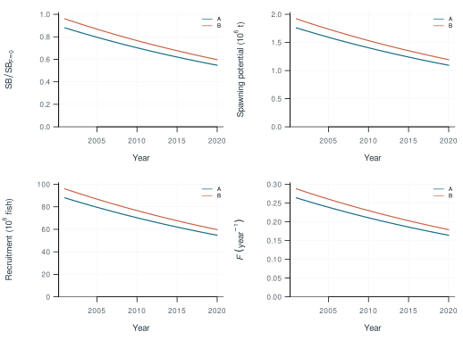
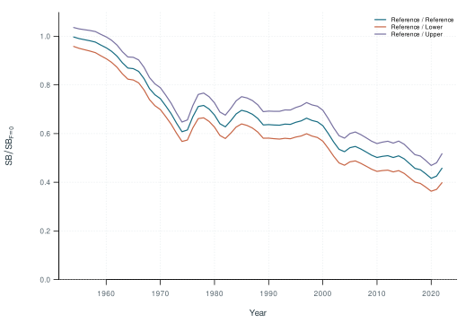
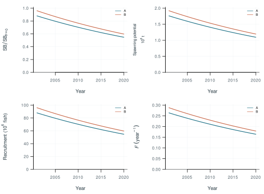
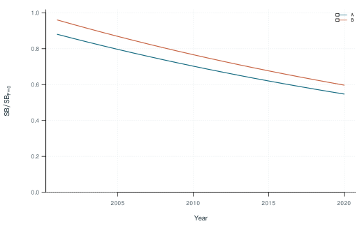

Illustrative study. Display values demonstrate the workflow; these models have not been fitted.
Workflow demonstration; not a stock assessment.








Table 1. Model configurations.
Table 2. Recorded numerical checks by model.
Table 3. Numbers of fitted observations and composition samples by series.